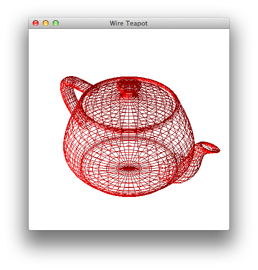
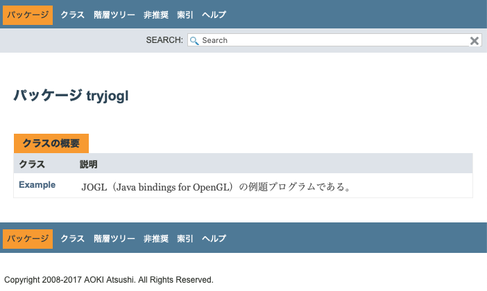

Javaで3次元グラフィックスのプログラミングを行いましょう。針金細工のティーポット（Wire Teapot）をOpenGL（Open Graphics Library）を用いて描画するプログラムを作成します。以下が完成図（実行結果）になります。macOS上で、1枚のウィンドウを開き、その中に照光（ライティング）を施したティーポット（お茶を注ぐための急須）をワイヤーフレーム（針金細工）で描き出します。

視点 = [10 , 10 , 10]
注視点 = [0 , 0 , 0]
上方向ベクトル = [0 , 1 , 0]
視界角 = 15
このプログラムをどのような順番でどうやって作ってゆくのか、それをプログラミング過程（Programming Process）として示しながら、プログラミングの実際（実践の経過）を皆さんの前に開き表して（紡ぎ出して）みます。プログラミングを進めるのにあたって、ダウンロードやインストールなどに使用するディレクトリは以下のディレクトリだけです。他のディレクトリ（特にシステムに重要なディレクトリなど）を用いる（汚す）ことはありません。（ただし、Java SEとApache Antがインストールされていることが前提になります。）
~/AP/Java/TryJOGL/ ：ホームディレクトリ（ログインディレクトリ）の直下の「AP/Java/TryJOGL」というディレクトリどうぞ、バージョン0からバージョン9までを、写経（長いお経を書き写しながら供養）をするように、後追い（真似）してくださると幸いです。一緒にJavaプログラミングの精進をいたしましょう。ここに示している「作ってゆく経過」が役に立つ（Javaプログラミングの初心者たちの福音になる）ことを願っております。
このプログラミング過程で出来上がったJavaドキュメント（javadoc）とアプリケーションを示しておきます。

$ (cd ~/Downloads/ ; curl -O http://www.cc.kyoto-su.ac.jp/~atsushi/deployment/AP/Java/TryJOGL.app.tar.gz) # まず、アーカイブファイルをダウンロード % Total % Received % Xferd Average Speed Time Time Time Current Dload Upload Total Spent Left Speed 100 4186k 100 4186k 0 0 2499k 0 0:00:01 0:00:01 --:--:-- 2498k $ (cd ~/Downloads/ ; cat ./TryJOGL.app.tar.gz ; rm -f ./TryJOGL.app.tar.gz) | (cd ~/Desktop/ ; tar xvfz -) # 次に、アーカイブファイルを展開して、デスクトップ上にアプリケーションを配置 x ./TryJOGL.app/ x ./TryJOGL.app/Contents/ x ./TryJOGL.app/Contents/MacOS/ x ./TryJOGL.app/Contents/Resources/ x ./TryJOGL.app/Contents/Info.plist x ./TryJOGL.app/Contents/PkgInfo x ./TryJOGL.app/Contents/Resources/JavaApp.icns x ./TryJOGL.app/Contents/Resources/applet.rsrc x ./TryJOGL.app/Contents/Resources/description.rtfd/ x ./TryJOGL.app/Contents/Resources/Java/ x ./TryJOGL.app/Contents/Resources/Scripts/ x ./TryJOGL.app/Contents/Resources/applet.icns x ./TryJOGL.app/Contents/Resources/Scripts/main.scpt x ./TryJOGL.app/Contents/Resources/Java/tryjogl-natives-macosx-universal.jar x ./TryJOGL.app/Contents/Resources/Java/natives/ x ./TryJOGL.app/Contents/Resources/Java/tryjogl.jar x ./TryJOGL.app/Contents/Resources/Java/natives/macosx-universal/ x ./TryJOGL.app/Contents/Resources/Java/natives/macosx-universal/libnativewindow_awt.dylib x ./TryJOGL.app/Contents/Resources/Java/natives/macosx-universal/libgluegen_rt.dylib x ./TryJOGL.app/Contents/Resources/Java/natives/macosx-universal/libnativewindow_macosx.dylib x ./TryJOGL.app/Contents/Resources/Java/natives/macosx-universal/libjogl_mobile.dylib x ./TryJOGL.app/Contents/Resources/Java/natives/macosx-universal/libnewt_head.dylib x ./TryJOGL.app/Contents/Resources/Java/natives/macosx-universal/libjogl_desktop.dylib x ./TryJOGL.app/Contents/Resources/description.rtfd/TXT.rtf x ./TryJOGL.app/Contents/MacOS/applet $ (cd ~/Desktop/ ; xattr -cr ./TryJOGL.app) # そして、アプリケーションの拡張属性を再帰的にクリア $ (cd ~/Desktop/ ; sudo spctl --master-disable ; open ./TryJOGL.app ; sudo spctl --master-enable) # openコマンドで起動、ただし、Gatekeeperを開け閉めしながら、または、TryJOGL.appをダブルクリック Password: # 管理者のパスワードを入力、Gatekeeperの開閉のために $